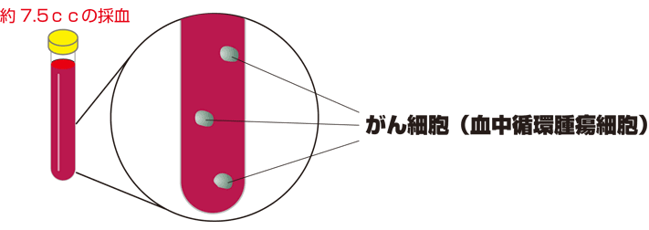
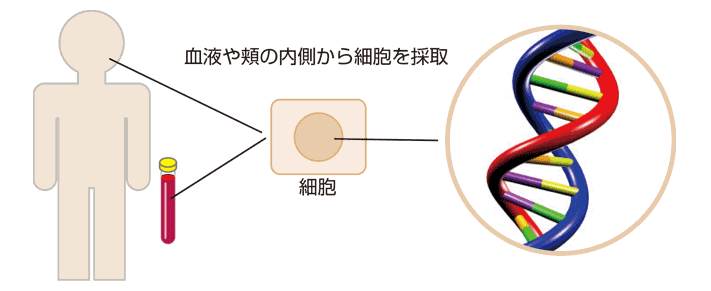

简体中文
简体中文


二人に一人ががんになる時代です。がんは早期発見と早期治療が重要です。 この早期がん予知検査は健康な方、あるいは過去にがんの治療を受けたことがある方、 現在がんの疑いがある方にもおすすめです。
がんの要因に、両親から受け継いだ遺伝による「先天的要因」と、生活習慣などによる「後天的要因」が挙げられます。
最近の研究では、ある種のがんでは遺伝による要因よりも、生活習慣による環境的な要因の影響が強く、がんになる原因に、日常の生活習慣が関係していると言われています。
日常の生活習慣によって遺伝子が傷つけられ、がんの卵とも言える細胞が毎日約5000個発生していると言われています。
こうした細胞は通常、修復されたり、免疫細胞などによって細胞の破壊が行われます。それでも、修復や破壊が行われなかった異常な細胞ががんとして成長します。
当院の早期がん予知検査では、がんを引き起こす要因となる生活環境による体内への影響をチェックする検査と、修復や破壊が行われずに成長してしまったがんをいち早く発見する検査の2種類用意しております。
早期がん予知検査『CRAB-U』
早期がん予知検査『CRAB-U』は、蓄積した活性酸素腫によって生じる酸化損傷ＤＮＡ(8-OHdG)と、組織が壊れて遊離してくるＤＮＡ(freeDNA)を併せて測定しています。
からだの状態が、がんの好む環境にあるかどうかを予測する指標となります。採尿による痛みを伴わない、からだにやさしい検査です。
がんになる可能性を測定します
- 痛みを伴わない
- 採尿するだけの簡単な検査
早期がん予知検査『CTC』
当院の早期がん予知検査『CTC』は、血液（約7.5cc）中にがん細胞（血中循環腫瘍細胞）が何個あるかをカウントする検査です。
CTC(血中循環腫瘍細胞)と呼ばれる画像診断機器でも発見できない大きさのがんを発見する検査です。
がんはある程度大きくなると、転移しようとする為に血液中やリンパ液中にがん細胞が流れ出ます。
このがん細胞を見つけることで、がんが体内にあるかどうかが分かります。
CTCの検出は、がんの可能性がある
- 今、がんになっているかどうかが分かる（部位の特定は出来ない）
- この検査を行える医療機関は少ない

その他の遺伝子検査
遺伝子検査はヒトの設計図と言われるDNAを血液やほほの内側粘膜から採取して、今の健康状態から将来がんやどんな病気になるのか、リスクを調べる検査です。
